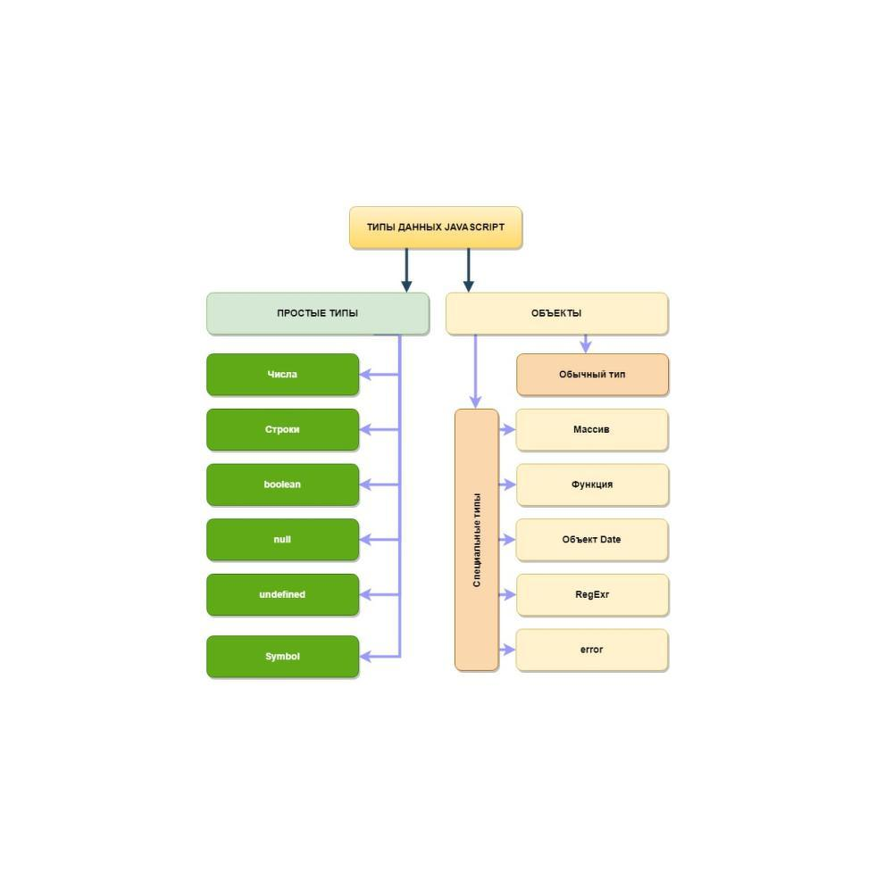

Задание
ОБЯЗАТЕЛЬНОЕ: max 2 БАЛЛА
1) Следующим переменным присвоить значения
- money - любое число “Доход за месяц”,
- income - строка с дополнительными доходом (например, фриланс или такси),
- addExpenses - строка с перечислением дополнительных расходов через запятую (минимум 3 значения),
- deposit - любое булевое значение,
- mission - любое число (Какую сумму хотите накопить),
- period - число от 1 до 12
2) Используя методы и свойства:
- Вывести в консоль тип данных значений переменных money, income, deposit;
- Вывести в консоль длину строки income
- Вывести в консоль “Период (period) месяцев” и “Цель заработать (mission) рублей/долларов/гривен/юани”
- Привести строку addExpenses к нижнему регистру и разбить строку на массив, вывести массив в консоль
- Объявить переменную budgetDay и присвоить дневной бюджет (доход за месяц / 30), вывести в консоль результат и остаток от деления
3) Проверить, чтобы все работало без ошибок в консоли
4) Добавить папку или ветку со вторым уроком в свой репозиторий на GitHub
УСЛОЖНЕННОЕ: max 2 БАЛЛА
Необходимо выполнить в отдельном JS файле, подключенному к отдельной HTML странице
1) Создать переменную num со значением 266219
· Вывести в консоль произведение (умножение) цифр этого числа
2) Полученный результат возвести в степень 3, используя только 1 оператор (Math.pow не подходит)
· Вывести на экран первые 2 цифры полученного числа
3) Добавить папку или ветку со вторым уроком в свой репозиторий на GitHub

Типы данных
Числа
Строки
Выражения и операторы
Условный (тернарный) оператор
Объект консоль
Обучение git в игровой форме - LearnGitBranching
Интерактивный тур по git
Часто задаваемые вопросы по git
Шпаргалка по консольным командам Git